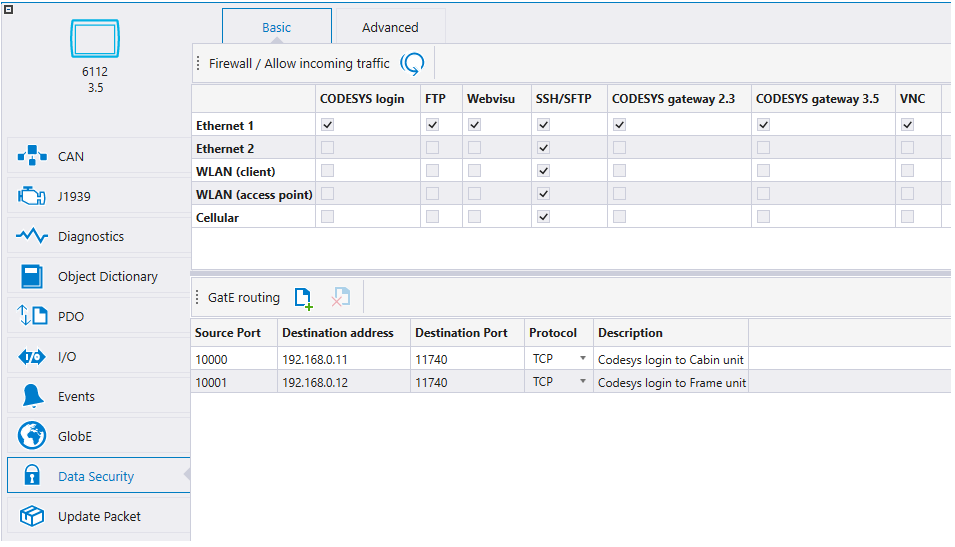
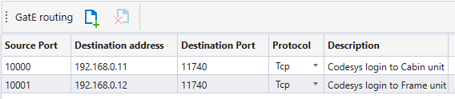

Epec GatE is required for forwarding connections. A license is required for using Epec GatE. For more information, please contact Epec Customer Support at techsupport@epec.fi.
|
|
Epec GatE is required for forwarding connections. A license is required for using Epec GatE. For more information, please contact Epec Customer Support at techsupport@epec.fi. |
When using Epec GatE service, inbound connections through the secure tunnel can be forwarded to other devices in the same network. The Data Security tab includes settings for GatE routing.

In the GatE routing view, the source and destination of the forwarded connection can be specified.
Forwarded connections can be added using theicon and removed using theicon.

|
Settings |
Description |
| Source Port | Inbound port from which the connection is allowed |
| Destination address | IP address to which the connection is forwarded |
| Destination Port | Destination port to which the connection is forwared |
| Protocol | Forwarded protocol (TCP, UDP, or Both) |
| Description | Text field can be feely used |
Epec Oy reserves all rights for improvements without prior notice.
Source file topic200206.htm
Last updated 25-Jun-2025